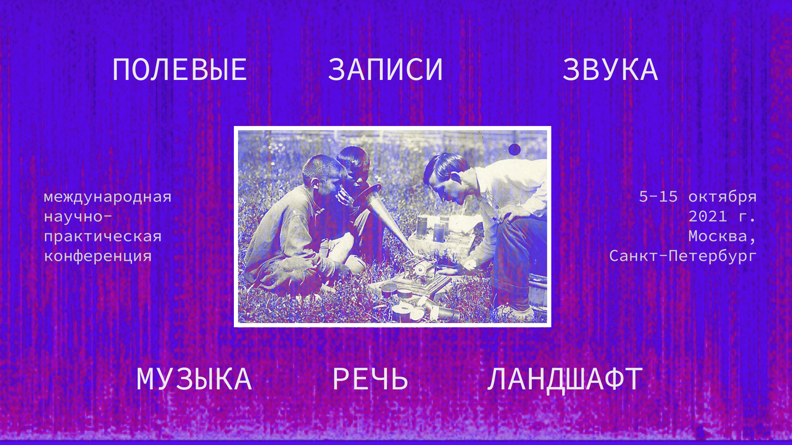

Событие завершено
Для участия в конференции необходимо заполнить электронную форму до 25 апреля 2021 г.
Звук – это физический, психический и культурный феномен, который для человека в первую очередь служит источником информации о событиях, процессах, сиюминутных изменениях в окружающей среде – словом, о том, что происходит здесь-и-сейчас. В связи с этим фиксация звуковых явлений, воспроизведение или точная имитация звуков, произошедших когда-то в прошлом где-то в другом месте – это своего рода попытка перехитрить время, сделать реальность более управляемой.
Началом истории звукозаписи можно считать появление письменности, так как речь – это прежде всего звуковое явление. В истории европейской музыкальной культуры приёмы записи/нотации звука долгое время развивались в направлении повышения точности инструкций по воспроизведению музыкальных композиций. Стандартизация конструкций музыкальных инструментов и исполнительских техник также способствовала большей точности воспроизведения музыкальных произведений и обеспечивала относительную неизменность их звучания в разных исполнениях. И уже в XX веке, после появления таких технологий записи и воспроизведения звуков, которые не требуют человеческих усилий по извлечению этих звуков здесь-и-сейчас, в истории европейской академической музыки произошёл поворот в сторону освобождения от стандартов нотации, интерпретации, исполнительских приёмов и принципов композиции. В некоторой степени можно считать, что ответственность за точность фиксации и воспроизведения звука была переложена с человека на механические/цифровые устройства. И действительно, технология и индустрия звукозаписи развивается в первую очередь в направлении увеличения соответствия зафиксированного звука реальному, вернее, в направлении усиления психофизиологического эффекта, который звук оказывает на человека – эффекта соприсутствия событию.
Говоря об описании и изучении звуковой картины мира, мы неизбежно приходим к концепции «humanly organized sound». Она включает в себя и дополнение повседневных звуковых ландшафтов «благоприятными» звуками, и отказ от некомфортных источников, интерпретируемых как «шум». Так или иначе, в своей повседневности мы имеем дело с выборочно воспринимаемым звуком, имея на то и культурные, и физиологические обоснования. Диапазон «неслышимого» так же значим для sound studies, как и «озвученная» модель мира.
И ещё один важный акцент в приведённой выше формулировке – концепция человека как слушателя и как производителя звуков. Звуковая реальность гораздо шире обусловленной человеческим восприятием: современный подход антропологии «по ту сторону человека» предлагает отойти от доктрины антропоцентризма и воспринять множество сущностей, таких как «растение», «минерал» или «животное» в качестве и слышащих, и слушающих, и воспроизводящих звук.
Несмотря на то, что технологии звукозаписи активно используются исследователями культуры (этнологами, этномузыкологами, фольклористами, лингвистами и др.), вопросы о том, какую роль сам феномен звукозаписи играет в культуре, обсуждаются редко. Именно этим вопросам посвящена научно-практическая междисциплинарная конференция о полевых записях звука, основная задача которой – организовать взаимообмен опытом работы со звуковыми явлениями между исследователями языка и культуры, музыкантами, композиторами и саунд-артистами, технологами, инженерами и программистами, саунд-дизайнерами и другими специалистами, вовлечёнными в практики фиксации, анализа и реконтекстуализации звука.
В ходе конференции мы планируем обсудить следующие темы:
К участию приглашаются специалисты в области этномузыкологии, музыковедения, антропологии/этнологии, фольклористики, лингвистики, саунд-арта, звукорежиссуры, звуковой инженерии, ИТ-технологий, ИИ-систем, программирования, музееведения, философии, социологии, искусствознания и культурологии.
Рабочие языки конференции: русский и английский.
Место проведения конференции: Институт этнологии и антропологии РАН (Москва) + онлайн.
Часть мероприятий конференции будет проходить в Пушкинском доме ИРЛИ РАН (Санкт-Петербург), а также на независимых площадках Москвы и Санкт-Петербурга.
Для участия в конференции необходимо заполнить электронную форму до 25 апреля 2021 г.
Программный комитет оставляет за собой право отбора поступивших заявок.
По результатам конференции предполагается публикация сборника статей (в электронном виде). Избранные статьи могут быть опубликованы в рецензируемых журналах.
По всем вопросам, связанным с участием в Конференции, можно обращаться по адресу: fieldsoundrecordings@gmail.com
Организационный взнос за участие в конференции не предполагается и не взимается.
Оргкомитет конференции